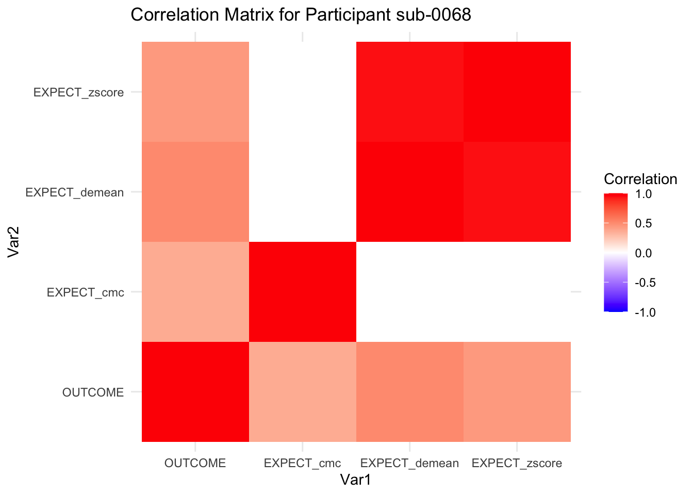
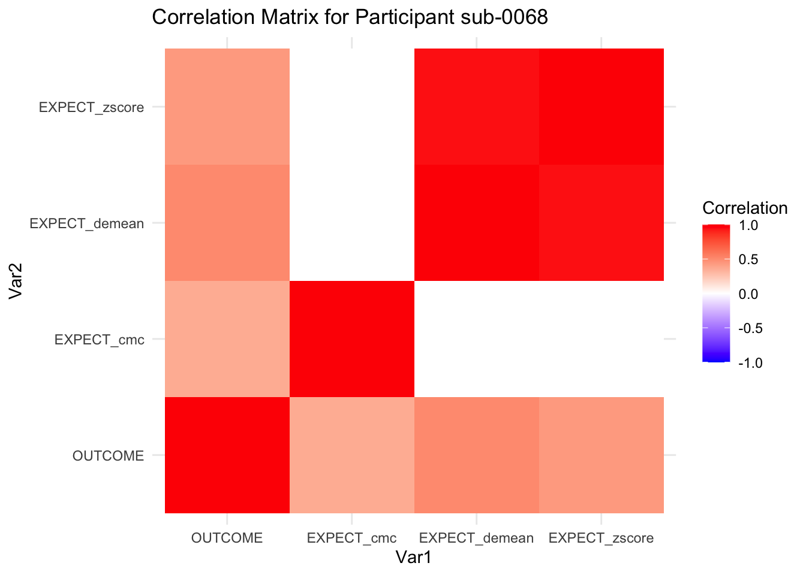
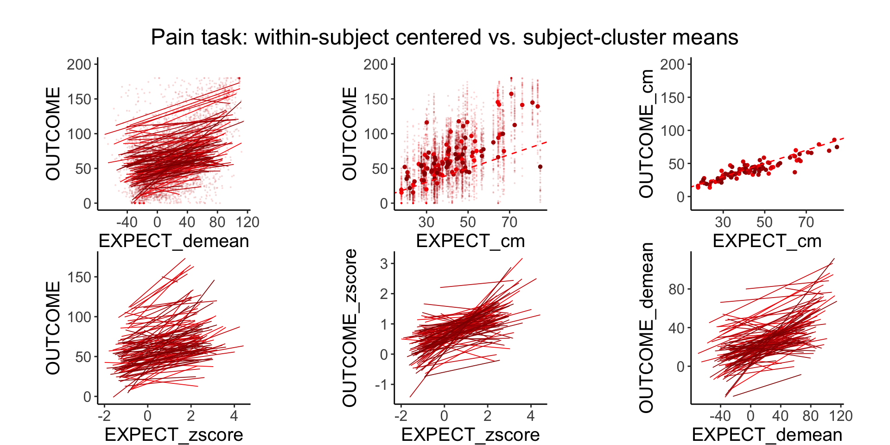
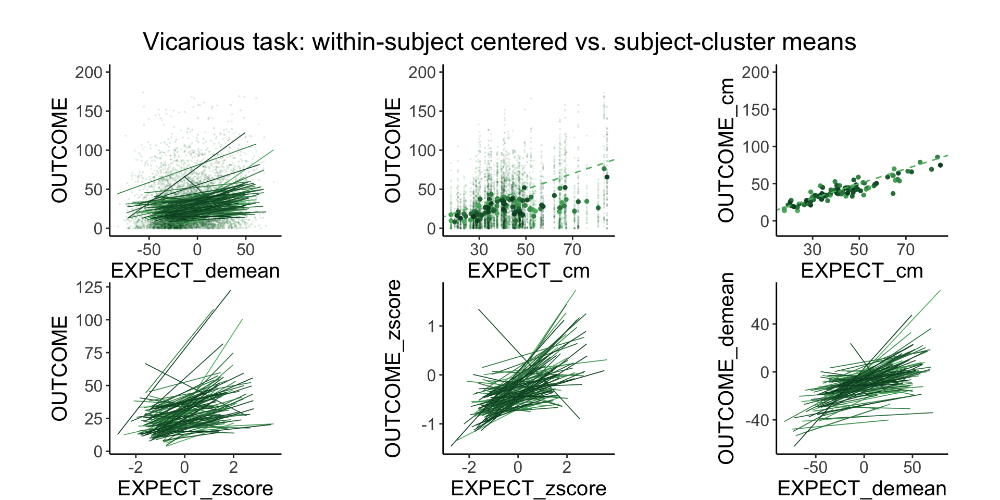
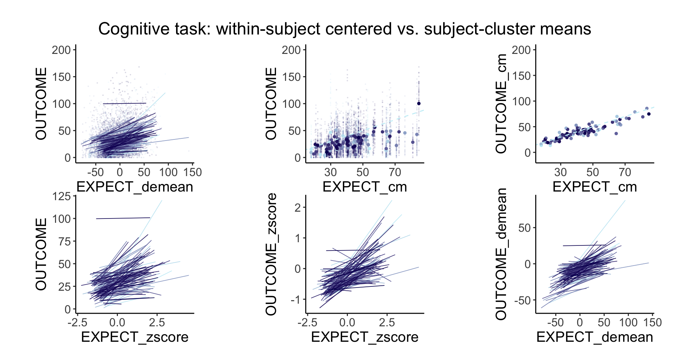

7 within / between subject effect and Scaling
What is the purpose of this notebook?
Here, we want to examine the between and within subject effects of subjective ratings. There are scale usage differences across individuals. It’s evident in our behavioral data. These scale usage differences do not really reflecting the underlying experience, but compresses the scale. This is one of the reasons why including the between-subject term improves the performance of the mediation model. It’s also in line with Enders and Tofighi’s illustration of centering in multilevel models. The logic is that there are multiple components that go into subjective ratings the way that an individual uses a scale (“between-subject effect”) and the fact that the rating does reflect the subjective experience (“within-subject effect”) We want to rid of the between subject effect and focus on the subjective experience. One way to resolve this is by z-scoring. Hypothesis: After z-scoring, if we see a high correlation across tasks in terms of their cue effects, then we can safely conclude that the way that people think of expectations are highly domain general The cue effect from raw scores can be conflated with scale artifact and also common domain general expectation mechanisms. Q. what about task-specific components? Some thoughts: * if scaling artifact is a big driving factor, that pain to brain is going to lead to a weak signal. * within person pain effects. only weakly tracks individual differences. /n * Main model:
lmer( OUTCOME ~ EXPECT)vs.lmer( OUTCOME ~ zscoreEXPECT)* Main question: Does Z-scoring lead to an improvement in predicting pain? Does the effect shrink, indicating that most pain ratings are a byproduct of participants using the scale differently? * {{ HYPOTHESES/EXPECTED OUTCOME }} * If slopes increase after z-scoring, effects * IV: - {{ Zscore }} ( {{ LEVELS}} ) * DV: {{ Outcome }}
- Enders, C. K., & Tofighi, D. (2007). Centering predictor variables in cross-sectional multilevel models: A new look at an old issue. Psychological Methods, 12(2), 121–138.
- https://philippmasur.de/2018/05/23/how-to-center-in-multilevel-models/
- displaying lmer in html tables: https://strengejacke.github.io/sjPlot/articles/tab_mixed.html
7.1 TODO:
- [x] zscore the ratings (ignore sessions)
- [x] predict outcome ratings
- [x] model compare zscore vs just raw score
- [x] include between subject level scores as covariates. AS ALWAYS
- [ ]identify why model doesn't converge for OUTCOME ~ EXPECT + (EXPECT|SUB)
It might be the zero ratings
- [ ] Drop trials with ratings of 0.
- [ ] raw cue effect, raw stim effect, raw cue/stimeffect, raw cue/stim + 1 effect7.2 computed_enderstofighi
compute_enderstofighi <- function(data, sub, outcome, expect, ses, run) {
maindata <- data %>%
group_by(!!sym(sub)) %>%
mutate(OUTCOME = as.numeric(!!sym(outcome))) %>%
mutate(EXPECT = as.numeric(!!sym(expect))) %>%
mutate(OUTCOME_cm = mean(OUTCOME, na.rm = TRUE)) %>%
mutate(OUTCOME_demean = OUTCOME - OUTCOME_cm) %>%
mutate(EXPECT_cm = mean(EXPECT, na.rm = TRUE)) %>%
mutate(EXPECT_demean = EXPECT - EXPECT_cm) %>%
#mutate(OUTCOME_zscore = as.numeric(scale(OUTCOME, center = TRUE, scale = TRUE)[, 1])) %>%
#mutate(EXPECT_zscore = as.numeric(scale(EXPECT, center = TRUE, scale = TRUE)[, 1]))
mutate(OUTCOME_zscore = (OUTCOME - mean(OUTCOME, na.rm = TRUE))/sd(OUTCOME, na.rm = TRUE)) %>% #as.numeric(scale(OUTCOME, center = TRUE, scale = TRUE)[, 1])) %>%
mutate(EXPECT_zscore = (EXPECT - mean(EXPECT, na.rm = TRUE))/sd(EXPECT, na.rm = TRUE)) #as.numeric(scale(EXPECT, center = TRUE, scale = TRUE)[, 1]))
data_p2 <- maindata %>%
arrange(!!sym(sub)) %>%
group_by(!!sym(sub)) %>%
mutate(trial_index = row_number())
data_a3 <- data_p2 %>%
group_by(!!sym(sub), !!sym(ses), !!sym(run)) %>%
mutate(trial_index = row_number(!!sym(run)))
data_a3lag <- data_a3 %>%
group_by(!!sym(sub), !!sym(ses), !!sym(run)) %>%
mutate(lag.OUTCOME_demean = dplyr::lag(OUTCOME_demean, n = 1, default = NA))
# Create Subjectwise Mean, centered in relation to the group mean
data_a3cmc <- data_a3lag %>%
ungroup %>%
mutate(EXPECT_cmc = EXPECT_cm - mean(EXPECT_cm, na.rm=TRUE)) %>%
mutate(OUTCOME_cmc = OUTCOME_cm - mean(OUTCOME_cm, na.rm=TRUE))
# Remove NA values ___________________________________________________________
data_centered_NA <- data_a3cmc %>%
filter(!is.na(OUTCOME)) %>% # Remove NA values
filter(!is.na(EXPECT))
return(data_centered_NA)
}7.3 Analysis 1: Pain display distribution of data
Let’s look at the distribution of the data. X axis: Y axis: Here’s the loaded dataset, filtered if Outcome Ratings have NA
# remove NA values first
df.centered_NA <- data_centered %>% filter(!is.na(OUTCOME)) # Remove NA values
head(df.centered_NA)## # A tibble: 6 × 75
## src_subject_id session_id param_task_name param_run_num param_counterbalance…¹
## <int> <int> <chr> <int> <int>
## 1 2 1 pain 1 3
## 2 2 1 pain 1 3
## 3 2 1 pain 1 3
## 4 2 1 pain 1 3
## 5 2 1 pain 1 3
## 6 2 1 pain 1 3
## # ℹ abbreviated name: ¹param_counterbalance_ver
## # ℹ 70 more variables: param_counterbalance_block_num <int>,
## # param_cue_type <chr>, param_stimulus_type <chr>, param_cond_type <int>,
## # param_trigger_onset <dbl>, param_start_biopac <dbl>, ITI_onset <dbl>,
## # ITI_biopac <dbl>, ITI_duration <dbl>, event01_cue_onset <dbl>,
## # event01_cue_biopac <dbl>, event01_cue_type <chr>,
## # event01_cue_filename <chr>, ISI01_onset <dbl>, ISI01_biopac <dbl>, …7.3.2 Identify subjects with narrow IQR
I plan to use this to filter out participants
library(dplyr)
# Assuming df.centered_NA is your dataframe and it's already loaded
# Task 1: Top and Bottom 5% Subjects
sorted_data <- df.centered_NA %>%
group_by(subject) %>%
summarize(median_outcome = median(OUTCOME, na.rm = TRUE)) %>%
arrange(median_outcome)
num_subjects <- nrow(sorted_data)
top_bottom_count <- ceiling(num_subjects * 0.05)
top_5_percent_subjects <- head(sorted_data, top_bottom_count)$subject
bottom_5_percent_subjects <- tail(sorted_data, top_bottom_count)$subject
# Task 2: Narrow IQR Subjects
iqr_data <- df.centered_NA %>%
group_by(subject) %>%
summarize(IQR = IQR(OUTCOME, na.rm = TRUE)) %>%
arrange(IQR)
# Output the subjects
cat("Top 5% Subjects based on Median Outcome:\n", toString(as.character(top_5_percent_subjects)), "\n")## Top 5% Subjects based on Median Outcome:
## 3, 4, 5, 60, 130, 19
cat("Bottom 5% Subjects based on Median Outcome:\n", toString(as.character(bottom_5_percent_subjects)), "\n")## Bottom 5% Subjects based on Median Outcome:
## 74, 46, 32, 15, 9, 50
# If you want to see the subjects with the narrowest IQRs
# cat("Subjects with the Narrowest IQRs:\n", head(iqr_data)$subject, "\n")
cat("Subjects with the Narrowest IQRs:\n", toString(as.character(head(iqr_data)$subject)), "\n")## Subjects with the Narrowest IQRs:
## 117, 85, 66, 29, 63, 123
narrowest_iqr_string <- paste0('"', as.character(head(iqr_data)$subject), '"', collapse = ", ")
cat("Subjects with the Narrowest IQRs:\n", narrowest_iqr_string, "\n")## Subjects with the Narrowest IQRs:
## "117", "85", "66", "29", "63", "123"
# head(iqr_data)$subject
# Create filter string based on narrow variability
subject_ids <- as.character(head(iqr_data)$subject)
formatted_subjects <- paste0("sub-", sprintf("%04d", as.numeric(subject_ids)))
filter_string <- paste(formatted_subjects, collapse = "|")
filter_string <- paste0("sub-0001|", filter_string)
# Output the filter string
cat("Filter String: ", filter_string, "\n")## Filter String: sub-0001|sub-0117|sub-0085|sub-0066|sub-0029|sub-0063|sub-01237.4 Analysis 2: Z score vs. not model comparison
lmer model compare z score vs nonzscore
Q. how do the coefficients change as a function of Z scoring vs not?
model.z <- lmer(OUTCOME ~ EXPECT_zscore + (EXPECT_zscore|subject), df.centered_NA)
model.nonz <- lmer(OUTCOME ~ EXPECT + (EXPECT|subject), df.centered_NA)## Warning in checkConv(attr(opt, "derivs"), opt$par, ctrl = control$checkConv, :
## Model failed to converge with max|grad| = 4.21058 (tol = 0.002, component 1)## Warning in checkConv(attr(opt, "derivs"), opt$par, ctrl = control$checkConv, : Model is nearly unidentifiable: very large eigenvalue
## - Rescale variables?
model.cmc <- lmer(OUTCOME ~ EXPECT_demean + EXPECT_cmc + (1|subject), df.centered_NA)
print_dash("model with Z scores")##
##
## ----------------------------------------
## model with Z scores
## ----------------------------------------
summary(model.z)## Linear mixed model fit by REML. t-tests use Satterthwaite's method [
## lmerModLmerTest]
## Formula: OUTCOME ~ EXPECT_zscore + (EXPECT_zscore | subject)
## Data: df.centered_NA
##
## REML criterion at convergence: 53494.5
##
## Scaled residuals:
## Min 1Q Median 3Q Max
## -4.5605 -0.5920 0.0064 0.5904 4.3988
##
## Random effects:
## Groups Name Variance Std.Dev. Corr
## subject (Intercept) 877.15 29.62
## EXPECT_zscore 48.44 6.96 0.16
## Residual 507.09 22.52
## Number of obs: 5825, groups: subject, 114
##
## Fixed effects:
## Estimate Std. Error df t value Pr(>|t|)
## (Intercept) 64.4462 2.7981 113.2011 23.032 <2e-16 ***
## EXPECT_zscore 7.1939 0.7309 115.3281 9.842 <2e-16 ***
## ---
## Signif. codes: 0 '***' 0.001 '**' 0.01 '*' 0.05 '.' 0.1 ' ' 1
##
## Correlation of Fixed Effects:
## (Intr)
## EXPECT_zscr 0.142
print_dash("model with raw scores, i.e. non Zscores")##
##
## ----------------------------------------
## model with raw scores, i.e. non Zscores
## ----------------------------------------
summary(model.nonz)## Linear mixed model fit by REML. t-tests use Satterthwaite's method [
## lmerModLmerTest]
## Formula: OUTCOME ~ EXPECT + (EXPECT | subject)
## Data: df.centered_NA
##
## REML criterion at convergence: 53378.1
##
## Scaled residuals:
## Min 1Q Median 3Q Max
## -4.5878 -0.5923 0.0121 0.5977 4.4260
##
## Random effects:
## Groups Name Variance Std.Dev. Corr
## subject (Intercept) 869.44478 29.4863
## EXPECT 0.03975 0.1994 -0.58
## Residual 503.76679 22.4447
## Number of obs: 5825, groups: subject, 114
##
## Fixed effects:
## Estimate Std. Error df t value Pr(>|t|)
## (Intercept) 47.20152 2.89746 56.84800 16.29 <2e-16 ***
## EXPECT 0.28268 0.02266 87.47735 12.47 <2e-16 ***
## ---
## Signif. codes: 0 '***' 0.001 '**' 0.01 '*' 0.05 '.' 0.1 ' ' 1
##
## Correlation of Fixed Effects:
## (Intr)
## EXPECT -0.597
## optimizer (nloptwrap) convergence code: 0 (OK)
## Model failed to converge with max|grad| = 4.21058 (tol = 0.002, component 1)
## Model is nearly unidentifiable: very large eigenvalue
## - Rescale variables?
print_dash("model with raw scores CMC and CWC")##
##
## ----------------------------------------
## model with raw scores CMC and CWC
## ----------------------------------------
summary(model.cmc)## Linear mixed model fit by REML. t-tests use Satterthwaite's method [
## lmerModLmerTest]
## Formula: OUTCOME ~ EXPECT_demean + EXPECT_cmc + (1 | subject)
## Data: df.centered_NA
##
## REML criterion at convergence: 53537.7
##
## Scaled residuals:
## Min 1Q Median 3Q Max
## -4.3594 -0.6055 0.0008 0.6163 4.8740
##
## Random effects:
## Groups Name Variance Std.Dev.
## subject (Intercept) 159.3 12.62
## Residual 544.4 23.33
## Number of obs: 5825, groups: subject, 114
##
## Fixed effects:
## Estimate Std. Error df t value Pr(>|t|)
## (Intercept) 6.474e+01 1.234e+00 1.114e+02 52.48 <2e-16 ***
## EXPECT_demean 2.964e-01 1.072e-02 5.712e+03 27.64 <2e-16 ***
## EXPECT_cmc 9.203e-01 4.250e-02 1.109e+02 21.65 <2e-16 ***
## ---
## Signif. codes: 0 '***' 0.001 '**' 0.01 '*' 0.05 '.' 0.1 ' ' 1
##
## Correlation of Fixed Effects:
## (Intr) EXPECT_d
## EXPECT_demn -0.001
## EXPECT_cmc 0.007 0.001
print_dash("model comparison")##
##
## ----------------------------------------
## model comparison
## ----------------------------------------
anova(model.z, model.nonz)## refitting model(s) with ML (instead of REML)## Data: df.centered_NA
## Models:
## model.z: OUTCOME ~ EXPECT_zscore + (EXPECT_zscore | subject)
## model.nonz: OUTCOME ~ EXPECT + (EXPECT | subject)
## npar AIC BIC logLik deviance Chisq Df Pr(>Chisq)
## model.z 6 53512 53552 -26750 53500
## model.nonz 6 53380 53420 -26684 53368 131.43 07.6 Validate: correlation matrix across centered variables
::::{.todolist}The zscores do not seem to be scaled within participant. Let’s check what’s going on. The mean value should be 0 for all participants ::::
## # A tibble: 6 × 33
## src_subject_id session_id param_run_num param_task_name event02_expect_angle
## <int> <int> <int> <chr> <dbl>
## 1 2 1 1 pain 5.53
## 2 2 1 1 pain 18.9
## 3 2 1 1 pain 103.
## 4 2 1 1 pain 81.2
## 5 2 1 1 pain 97.2
## 6 2 1 1 pain 117.
## # ℹ 28 more variables: param_cue_type <chr>, param_stimulus_type <chr>,
## # event04_actual_angle <dbl>, trial_index <int>, trial_count_sub <int>,
## # trial_ind <dbl>, sub <chr>, ses <chr>, run <chr>, runtype <chr>,
## # task <chr>, trial_sub <int>, trial <chr>, cuetype <chr>,
## # stimintensity <chr>, DEPc <chr>, DEP <chr>, OUTCOME <dbl>, EXPECT <dbl>,
## # OUTCOME_cm <dbl>, OUTCOME_demean <dbl>, EXPECT_cm <dbl>,
## # EXPECT_demean <dbl>, OUTCOME_zscore <dbl>, EXPECT_zscore <dbl>, …
# Assuming df is your dataframe, and 'participant', 'col1', 'col2', 'col3' are your column names
df.PVC_center$subject <- factor(df.PVC_center$sub)
df.PVC_center$OUTCOME <- as.numeric(df.PVC_center$OUTCOME)
df.PVC_center$EXPECT_cmc <- as.numeric(df.PVC_center$EXPECT_cmc)
df.PVC_center$EXPECT_demean <- as.numeric(df.PVC_center$EXPECT_demean)
correlation_matrix_per_participant <- df.PVC_center %>%
group_by(sub) %>%
summarize(
cor_matrix = list(cor(.[, c("OUTCOME", "EXPECT_cmc", "EXPECT_demean", "EXPECT_zscore")],
use = "complete.obs"))
)
# To view the correlation matrix for the first participant
# correlation_matrix_per_participant$cor_matrix[[1]]
# plot correlatin matrix _______________________________________________________
library(ggplot2)
library(reshape2)
library(dplyr)
# Assuming correlation_matrix_per_participant is the result from the previous step
for(i in 1:nrow(correlation_matrix_per_participant)) {
participant_id <- correlation_matrix_per_participant$sub[i]
cor_matrix <- correlation_matrix_per_participant$cor_matrix[[i]]
# Convert the correlation matrix to long format
long_cor_matrix <- melt(cor_matrix)
names(long_cor_matrix) <- c("Var1", "Var2", "value")
# Plotting
p <- ggplot(long_cor_matrix, aes(Var1, Var2, fill = value)) +
geom_tile() +
scale_fill_gradient2(low = "blue", high = "red", mid = "white",
midpoint = 0, limit = c(-1, 1), space = "Lab",
name="Correlation") +
theme_minimal() +
ggtitle(paste("Correlation Matrix for Participant", participant_id))
print(p)
}

 


7.6.1 plot per participant. Outcome, Expect, demean
pain.df <- df.PVC_center[df.PVC_center$runtype == "runtype-pain", ]
sub_0063pain.df <- pain.df[pain.df$sub == "sub-0060",]
head(sub_0063pain.df)## # A tibble: 6 × 34
## src_subject_id session_id param_run_num param_task_name event02_expect_angle
## <int> <int> <int> <chr> <dbl>
## 1 60 1 1 pain 0
## 2 60 1 1 pain 51.0
## 3 60 1 1 pain 45.3
## 4 60 1 1 pain 28.4
## 5 60 1 1 pain 66.1
## 6 60 1 1 pain 0
## # ℹ 29 more variables: param_cue_type <chr>, param_stimulus_type <chr>,
## # event04_actual_angle <dbl>, trial_index <int>, trial_count_sub <int>,
## # trial_ind <dbl>, sub <chr>, ses <chr>, run <chr>, runtype <chr>,
## # task <chr>, trial_sub <int>, trial <chr>, cuetype <chr>,
## # stimintensity <chr>, DEPc <chr>, DEP <chr>, OUTCOME <dbl>, EXPECT <dbl>,
## # OUTCOME_cm <dbl>, OUTCOME_demean <dbl>, EXPECT_cm <dbl>,
## # EXPECT_demean <dbl>, OUTCOME_zscore <dbl>, EXPECT_zscore <dbl>, …
# hist(sub_0063pain.df$EXPECT)
# hist(sub_0063pain.df$EXPECT_zscore)
# hist(sub_0063pain.df$EXPECT_cm)
# hist(sub_0063pain.df$EXPECT_demean)
plot(sub_0063pain.df$EXPECT_demean, sub_0063pain.df$OUTCOME)
plot(sub_0063pain.df$EXPECT_zscore, sub_0063pain.df$OUTCOME)
r <- ggplot(sub_0063pain.df, aes(x = EXPECT)) +
geom_histogram(bins = 30, fill = "blue", alpha = 0.7) +
labs(title = "Histogram of Variable", x = "Expect (Raw)", y = "Outcome")+
theme_classic()
z <- ggplot(sub_0063pain.df, aes(x = EXPECT_zscore)) +
geom_histogram(bins = 30, fill = "blue", alpha = 0.7) +
labs(title = "Histogram of Variable", x = "Expect (Z)", y = "Outcome")+
theme_classic()
cmc <- ggplot(sub_0063pain.df, aes(x = EXPECT_cm)) +
geom_histogram(bins = 30, fill = "blue", alpha = 0.7) +
labs(title = "Histogram of Variable", x = "Expect (CMC)", y = "Outcome") +
theme_classic()
arranged_plots <- (ggpubr::ggarrange(
r, z, cmc,
common.legend = FALSE,
legend = "none",
ncol = 3,
nrow = 1,
widths = c(1,1,1),
heights = c(1),
align = "v"
))
grid.draw(arranged_plots)7.7 Analysis 3
7.7.1 lmer model compare z score vs nonzscore
pain.df <- df.PVC_center[df.PVC_center$runtype == "runtype-pain", ]
vic.df <- df.PVC_center[df.PVC_center$runtype == "runtype-vicarious", ]
cog.df <- df.PVC_center[df.PVC_center$runtype == "runtype-cognitive", ]
model.pain_z <- lmer(OUTCOME ~ EXPECT_zscore + (EXPECT_zscore|sub), pain.df)
model.vic_z <- lmer(OUTCOME ~ EXPECT_zscore + (EXPECT_zscore|sub), vic.df)
model.cog_z <- lmer(OUTCOME ~ EXPECT_zscore + (EXPECT_zscore|sub), cog.df)
model.pain_raw <- lmer(OUTCOME ~ EXPECT + (EXPECT|sub), pain.df)## Warning in checkConv(attr(opt, "derivs"), opt$par, ctrl = control$checkConv, :
## Model failed to converge with max|grad| = 5.82673 (tol = 0.002, component 1)## Warning in checkConv(attr(opt, "derivs"), opt$par, ctrl = control$checkConv, : Model is nearly unidentifiable: very large eigenvalue
## - Rescale variables?
model.vic_raw <- lmer(OUTCOME ~ EXPECT + (EXPECT|sub), vic.df)## Warning in checkConv(attr(opt, "derivs"), opt$par, ctrl = control$checkConv, : Model failed to converge with max|grad| = 0.0529862 (tol = 0.002, component 1)
## Warning in checkConv(attr(opt, "derivs"), opt$par, ctrl = control$checkConv, : Model is nearly unidentifiable: very large eigenvalue
## - Rescale variables?
model.cog_raw <- lmer(OUTCOME ~ EXPECT + (EXPECT|sub), cog.df)## Warning in checkConv(attr(opt, "derivs"), opt$par, ctrl = control$checkConv, : Model failed to converge with max|grad| = 2.36973 (tol = 0.002, component 1)
## Warning in checkConv(attr(opt, "derivs"), opt$par, ctrl = control$checkConv, : Model is nearly unidentifiable: very large eigenvalue
## - Rescale variables?
model.pain_cmc <- lmer(OUTCOME ~ EXPECT_demean + EXPECT_cmc + (1|sub), pain.df)
model.vic_cmc <- lmer(OUTCOME ~ EXPECT_demean + EXPECT_cmc + (1|sub), vic.df)
model.cog_cmc <- lmer(OUTCOME ~ EXPECT_demean + EXPECT_cmc + (1|sub), cog.df)
model.pain_z <- lmer(OUTCOME ~ EXPECT_zscore + (EXPECT_zscore|sub), pain.df)
model.pain_bothz <- lmer(OUTCOME_zscore ~ EXPECT_zscore + (EXPECT_zscore|sub), pain.df)
model.pain_bothCM <- lmer(OUTCOME_demean ~ EXPECT_demean + (EXPECT_demean|sub), pain.df)## Warning in checkConv(attr(opt, "derivs"), opt$par, ctrl = control$checkConv, : Model failed to converge with max|grad| = 0.0126555 (tol = 0.002, component 1)
## Warning in checkConv(attr(opt, "derivs"), opt$par, ctrl = control$checkConv, : Model is nearly unidentifiable: very large eigenvalue
## - Rescale variables?
model.pain_CM <- lmer(OUTCOME ~ EXPECT_demean + (EXPECT_demean|sub), pain.df)## Warning in checkConv(attr(opt, "derivs"), opt$par, ctrl = control$checkConv, : Model failed to converge with max|grad| = 0.161577 (tol = 0.002, component 1)
## Warning in checkConv(attr(opt, "derivs"), opt$par, ctrl = control$checkConv, : Model is nearly unidentifiable: very large eigenvalue
## - Rescale variables?
print_dash("model with Z scores :: Pain")##
##
## ----------------------------------------
## model with Z scores :: Pain
## ----------------------------------------
summary(model.pain_z)## Linear mixed model fit by REML. t-tests use Satterthwaite's method [
## lmerModLmerTest]
## Formula: OUTCOME ~ EXPECT_zscore + (EXPECT_zscore | sub)
## Data: pain.df
##
## REML criterion at convergence: 52401.2
##
## Scaled residuals:
## Min 1Q Median 3Q Max
## -4.5165 -0.5939 0.0074 0.6040 4.3649
##
## Random effects:
## Groups Name Variance Std.Dev. Corr
## sub (Intercept) 636.60 25.231
## EXPECT_zscore 45.32 6.732 0.25
## Residual 516.89 22.735
## Number of obs: 5701, groups: sub, 108
##
## Fixed effects:
## Estimate Std. Error df t value Pr(>|t|)
## (Intercept) 60.2351 2.4643 103.9474 24.44 <2e-16 ***
## EXPECT_zscore 8.1635 0.7389 102.9673 11.05 <2e-16 ***
## ---
## Signif. codes: 0 '***' 0.001 '**' 0.01 '*' 0.05 '.' 0.1 ' ' 1
##
## Correlation of Fixed Effects:
## (Intr)
## EXPECT_zscr 0.169
print_dash("model with Z scores :: Vicarious")##
##
## ----------------------------------------
## model with Z scores :: Vicarious
## ----------------------------------------
summary(model.vic_z)## Linear mixed model fit by REML. t-tests use Satterthwaite's method [
## lmerModLmerTest]
## Formula: OUTCOME ~ EXPECT_zscore + (EXPECT_zscore | sub)
## Data: vic.df
##
## REML criterion at convergence: 55765.7
##
## Scaled residuals:
## Min 1Q Median 3Q Max
## -3.0181 -0.6539 -0.2608 0.4712 5.1554
##
## Random effects:
## Groups Name Variance Std.Dev. Corr
## sub (Intercept) 128.10 11.32
## EXPECT_zscore 20.16 4.49 0.56
## Residual 581.72 24.12
## Number of obs: 6023, groups: sub, 109
##
## Fixed effects:
## Estimate Std. Error df t value Pr(>|t|)
## (Intercept) 28.910 1.148 110.354 25.19 <2e-16 ***
## EXPECT_zscore 5.741 0.593 113.213 9.68 <2e-16 ***
## ---
## Signif. codes: 0 '***' 0.001 '**' 0.01 '*' 0.05 '.' 0.1 ' ' 1
##
## Correlation of Fixed Effects:
## (Intr)
## EXPECT_zscr 0.483
print_dash("model with Z scores :: Cognitive")##
##
## ----------------------------------------
## model with Z scores :: Cognitive
## ----------------------------------------
summary(model.cog_z)## Linear mixed model fit by REML. t-tests use Satterthwaite's method [
## lmerModLmerTest]
## Formula: OUTCOME ~ EXPECT_zscore + (EXPECT_zscore | sub)
## Data: cog.df
##
## REML criterion at convergence: 52720.9
##
## Scaled residuals:
## Min 1Q Median 3Q Max
## -4.0458 -0.6033 -0.1539 0.4586 6.6938
##
## Random effects:
## Groups Name Variance Std.Dev. Corr
## sub (Intercept) 163.82 12.799
## EXPECT_zscore 23.29 4.825 0.38
## Residual 367.83 19.179
## Number of obs: 5977, groups: sub, 109
##
## Fixed effects:
## Estimate Std. Error df t value Pr(>|t|)
## (Intercept) 30.4662 1.2622 108.1152 24.14 <2e-16 ***
## EXPECT_zscore 7.1026 0.5792 108.5177 12.26 <2e-16 ***
## ---
## Signif. codes: 0 '***' 0.001 '**' 0.01 '*' 0.05 '.' 0.1 ' ' 1
##
## Correlation of Fixed Effects:
## (Intr)
## EXPECT_zscr 0.345
print_dash("model with raw scores, i.e. non Zscores :: Pain")##
##
## ----------------------------------------
## model with raw scores, i.e. non Zscores :: Pain
## ----------------------------------------
summary(model.pain_raw)## Linear mixed model fit by REML. t-tests use Satterthwaite's method [
## lmerModLmerTest]
## Formula: OUTCOME ~ EXPECT + (EXPECT | sub)
## Data: pain.df
##
## REML criterion at convergence: 52342.5
##
## Scaled residuals:
## Min 1Q Median 3Q Max
## -4.5451 -0.5990 0.0130 0.6041 4.3842
##
## Random effects:
## Groups Name Variance Std.Dev. Corr
## sub (Intercept) 885.9061 29.7642
## EXPECT 0.0407 0.2017 -0.58
## Residual 513.2390 22.6548
## Number of obs: 5701, groups: sub, 108
##
## Fixed effects:
## Estimate Std. Error df t value Pr(>|t|)
## (Intercept) 48.2011 2.9898 50.6459 16.12 <2e-16 ***
## EXPECT 0.2798 0.0231 81.9412 12.12 <2e-16 ***
## ---
## Signif. codes: 0 '***' 0.001 '**' 0.01 '*' 0.05 '.' 0.1 ' ' 1
##
## Correlation of Fixed Effects:
## (Intr)
## EXPECT -0.601
## optimizer (nloptwrap) convergence code: 0 (OK)
## Model failed to converge with max|grad| = 5.82673 (tol = 0.002, component 1)
## Model is nearly unidentifiable: very large eigenvalue
## - Rescale variables?
print_dash("model with raw scores, i.e. non Zscores :: Vicarious")##
##
## ----------------------------------------
## model with raw scores, i.e. non Zscores :: Vicarious
## ----------------------------------------
summary(model.vic_raw)## Linear mixed model fit by REML. t-tests use Satterthwaite's method [
## lmerModLmerTest]
## Formula: OUTCOME ~ EXPECT + (EXPECT | sub)
## Data: vic.df
##
## REML criterion at convergence: 55709.4
##
## Scaled residuals:
## Min 1Q Median 3Q Max
## -3.0287 -0.6525 -0.2573 0.4708 5.1655
##
## Random effects:
## Groups Name Variance Std.Dev. Corr
## sub (Intercept) 61.4815 7.8410
## EXPECT 0.0205 0.1432 -0.30
## Residual 581.2022 24.1081
## Number of obs: 6023, groups: sub, 109
##
## Fixed effects:
## Estimate Std. Error df t value Pr(>|t|)
## (Intercept) 19.85080 0.92571 104.49803 21.44 <2e-16 ***
## EXPECT 0.21925 0.01981 119.99847 11.06 <2e-16 ***
## ---
## Signif. codes: 0 '***' 0.001 '**' 0.01 '*' 0.05 '.' 0.1 ' ' 1
##
## Correlation of Fixed Effects:
## (Intr)
## EXPECT -0.492
## optimizer (nloptwrap) convergence code: 0 (OK)
## Model failed to converge with max|grad| = 0.0529862 (tol = 0.002, component 1)
## Model is nearly unidentifiable: very large eigenvalue
## - Rescale variables?
print_dash("model with raw scores, i.e. non Zscores :: Cognitive")##
##
## ----------------------------------------
## model with raw scores, i.e. non Zscores :: Cognitive
## ----------------------------------------
summary(model.cog_raw)## Linear mixed model fit by REML. t-tests use Satterthwaite's method [
## lmerModLmerTest]
## Formula: OUTCOME ~ EXPECT + (EXPECT | sub)
## Data: cog.df
##
## REML criterion at convergence: 52652
##
## Scaled residuals:
## Min 1Q Median 3Q Max
## -3.7736 -0.6043 -0.1597 0.4548 6.6799
##
## Random effects:
## Groups Name Variance Std.Dev. Corr
## sub (Intercept) 64.12102 8.0076
## EXPECT 0.01698 0.1303 -0.09
## Residual 369.70089 19.2276
## Number of obs: 5977, groups: sub, 109
##
## Fixed effects:
## Estimate Std. Error df t value Pr(>|t|)
## (Intercept) 19.47584 0.89942 119.72844 21.65 <2e-16 ***
## EXPECT 0.25735 0.01726 121.97945 14.91 <2e-16 ***
## ---
## Signif. codes: 0 '***' 0.001 '**' 0.01 '*' 0.05 '.' 0.1 ' ' 1
##
## Correlation of Fixed Effects:
## (Intr)
## EXPECT -0.339
## optimizer (nloptwrap) convergence code: 0 (OK)
## Model failed to converge with max|grad| = 2.36973 (tol = 0.002, component 1)
## Model is nearly unidentifiable: very large eigenvalue
## - Rescale variables?
print_dash("model with raw Pain scores CMC and CWC")##
##
## ----------------------------------------
## model with raw Pain scores CMC and CWC
## ----------------------------------------
# summary(model.pain_cmc)
sjPlot::tab_model(model.pain_cmc, p.val = "kr", show.df = TRUE)| OUTCOME | ||||
|---|---|---|---|---|
| Predictors | Estimates | CI | p | df |
| (Intercept) | 59.75 | 56.44 – 63.05 | <0.001 | 109.31 |
| EXPECT demean | 0.30 | 0.28 – 0.32 | <0.001 | 5664.90 |
| EXPECT cmc | 1.25 | 1.02 – 1.47 | <0.001 | 106.98 |
| Random Effects | ||||
| σ2 | 554.94 | |||
| τ00sub | 283.42 | |||
| ICC | 0.34 | |||
| N sub | 108 | |||
| Observations | 5701 | |||
| Marginal R2 / Conditional R2 | 0.401 / 0.603 | |||
print_dash("model comparison")##
##
## ----------------------------------------
## model comparison
## ----------------------------------------
anova(model.pain_z, model.pain_raw)## refitting model(s) with ML (instead of REML)## Data: pain.df
## Models:
## model.pain_z: OUTCOME ~ EXPECT_zscore + (EXPECT_zscore | sub)
## model.pain_raw: OUTCOME ~ EXPECT + (EXPECT | sub)
## npar AIC BIC logLik deviance Chisq Df Pr(>Chisq)
## model.pain_z 6 52418 52458 -26203 52406
## model.pain_raw 6 52344 52384 -26166 52332 74.224 0
# _______________________________________________________
# # Example using broom to get a tidied summary
# library(broom)
#
# tidy_model_pain_z <- tidy(model.pain_z)
# tidy_model_vic_z <- tidy(model.vic_z)
# # ... and so on for the other models
#
# # Combine tidied summaries into one data frame
# all_tidy_effects <- bind_rows(
# tidy_model_pain_z %>% mutate(model = "Pain Z"),
# tidy_model_vic_z %>% mutate(model = "Vicarious Z"),
# # ... and so on for the other models
# )
#
# # Print the combined tidied model summaries
# print(all_tidy_effects)7.7.2 check lmer CMC model
sjPlot::tab_model(model.pain_cmc, p.val = "kr", show.df = TRUE)| OUTCOME | ||||
|---|---|---|---|---|
| Predictors | Estimates | CI | p | df |
| (Intercept) | 59.75 | 56.44 – 63.05 | <0.001 | 109.31 |
| EXPECT demean | 0.30 | 0.28 – 0.32 | <0.001 | 5664.90 |
| EXPECT cmc | 1.25 | 1.02 – 1.47 | <0.001 | 106.98 |
| Random Effects | ||||
| σ2 | 554.94 | |||
| τ00sub | 283.42 | |||
| ICC | 0.34 | |||
| N sub | 108 | |||
| Observations | 5701 | |||
| Marginal R2 / Conditional R2 | 0.401 / 0.603 | |||
7.7.3 lmer combined coefficients into table
Since there are multiple models, I combine the coefficients (within subject expectation effects) into one table
library(DT)
# Print or use kable/DT for a nicer table in R Markdown ________________________
DT::datatable(all_fixed_effects,
options = list(
pageLength = 25,
columnDefs = list(
list(targets = c(4,5,6), # Assuming 2nd and 3rd columns are numeric
render = JS(
"function(data, type, row, meta) {",
"return type === 'display' || type === 'filter' ?",
"parseFloat(data).toFixed(3) : data;",
"}"
)
)
)
),
caption = "Summary of Non-Intercept Fixed Effects across Models")7.7.5 plot how much of the demeans predict outcome ratings
library(ggplot2)
library(gridExtra)
library(grid)
plot_endertofighi <- function(data, taskname, color_low="gray", color_high="black") {
runtype_filter <- paste0("runtype-", taskname)
data$sub_numeric <- as.numeric(as.factor(data$sub))
# Plot for demean ____________________________________________________________
g.Odemean <- ggplot(data,
aes(y = OUTCOME_demean, x = EXPECT_demean, colour = sub_numeric, group = sub), size = .3, color = 'gray') +
#geom_point(size = .1) +
geom_smooth(method = 'lm', formula = y ~ x, se = FALSE, size = .3) +
theme_classic() +
scale_colour_gradient(low = color_low, high = color_high) +
# theme(legend.position = "none") +
theme(legend.position = "none",
plot.margin = margin(t = .3, r = .1, b = .1, l = .1, unit = "pt")) +
coord_fixed(ratio = 1)
# ylim(0,200)
g.Odemean <- ggplot_largetext(g.Odemean) # Assuming ggplot_largetext is a defined function
# Plot for demean ____________________________________________________________
g.demean <- ggplot(data,
aes(y = OUTCOME, x = EXPECT_demean, colour = sub_numeric, group = sub), size = .3, color = 'gray') +
geom_point(size = .1, alpha = .1) +
geom_smooth(method = 'lm', formula = y ~ x, se = FALSE, size = .3) +
theme_classic() +
scale_colour_gradient(low = color_low, high = color_high) +
# theme(legend.position = "none") +
theme(legend.position = "none",
plot.margin = margin(t = .3, r = .1, b = .1, l = .1, unit = "pt")) +
coord_fixed(ratio = 1) +
ylim(0,200)
g.demean <- ggplot_largetext(g.demean) # Assuming ggplot_largetext is a defined function
# Plot for Cluster-wise means ________________________________________________
g.Ocm <- ggplot(data,
aes(y = OUTCOME, x = EXPECT_cm, colour = sub_numeric, group = sub), size = .3, color = 'gray') +
#geom_point(size = .1, alpha = .1) +
stat_summary(
fun = mean, geom = "point",
aes(group = sub), # Group by subject
size = 1
) +
scale_colour_gradient(low = color_low, high = color_high) +
geom_abline(intercept = 0, slope = 1, linetype = "dashed", color = color_low) + # Add the identity line
geom_smooth(method = 'lm', formula = y ~ x, se = FALSE, size = 1) + #size = .3) +
theme_classic() +
theme(legend.position = "none",
plot.margin = margin(t = .3, r = .1, b = .1, l = .1, unit = "pt")) +
coord_fixed(ratio = 1) +
ylim(0,200)
g.Ocm <- ggplot_largetext(g.Ocm) # Assuming ggplot_largetext is a defined function
# Plot for Cluster-wise means ________________________________________________
g.cm <- ggplot(data,
aes(y = OUTCOME_cm, x = EXPECT_cm, colour = sub_numeric, group = sub), size = .3, color = 'gray') +
stat_summary(
fun.y = mean, geom = "point",
aes(group =sub_numeric), #EXPECT_cm),
size = 1
) +
geom_point(size = .1, alpha = .1) +
scale_colour_gradient(low = color_low, high = color_high) +
geom_abline(intercept = 0, slope = 1, linetype = "dashed", color = color_low) + # Add the identity line
geom_smooth(method = 'lm', formula = y ~ x, se = FALSE, size = 1) + #size = .3) +
theme_classic() +
theme(legend.position = "none",
plot.margin = margin(t = .3, r = .1, b = .1, l = .1, unit = "pt")) +
coord_fixed(ratio = 1) +
ylim(-10,200)
g.cm <- ggplot_largetext(g.cm) # Assuming ggplot_largetext is a defined function
# Plot for Zscore ____________________________________________________________
g.z <- ggplot(data,
aes(y = OUTCOME, x = EXPECT_zscore, colour = sub_numeric, group = sub), size = .3, color = 'gray') +
#geom_point(size = .1) +
scale_colour_gradient(low = color_low, high = color_high) +
geom_smooth(method = 'lm', formula = y ~ x, se = FALSE, size = .3) +
theme_classic() +
theme(legend.position = "none", plot.margin = margin(t = .3, r = .1, b = .1, l = .1, unit = "pt")) +
coord_fixed(ratio = 1)
g.z <- ggplot_largetext(g.z) # Assuming ggplot_largetext is a defined function
# Plot for Zscore ____________________________________________________________
g.z2 <- ggplot(data,
aes(y = OUTCOME_zscore, x = EXPECT_zscore, colour = sub_numeric, group = sub), size = .3, color = 'gray') +
#geom_point(size = .1) +
scale_colour_gradient(low = color_low, high = color_high) +
geom_smooth(method = 'lm', formula = y ~ x, se = FALSE, size = .3) +
theme_classic() +
theme(legend.position = "none", plot.margin = margin(t = .3, r = .1, b = .1, l = .1, unit = "pt")) +
coord_fixed(ratio = 1)
g.z2 <- ggplot_largetext(g.z2) # Assuming ggplot_largetext is a defined function
# Combine plots
title_text <- paste(tools::toTitleCase(taskname), "task: within-subject centered vs. subject-cluster means\n")
title_grob <- grid::textGrob(title_text, gp = gpar(fontsize = 18), vjust = 1)
# grid.draw(gridExtra::grid.arrange(g.demean, g.cm, g.z, ncol = 3,
# widths = c(1, 1, 1), heights = c(1, 1, 1),
# top = title_grob
# ))
# Plot for Cluster-wise means ________________________________________________
g.cmc <- ggplot(data,
aes(y = OUTCOME_cmc, x = EXPECT_cmc, colour = sub_numeric, group = sub), size = .3, color = 'gray') +
stat_summary(
fun.y = mean, geom = "point",
aes(group =sub_numeric), #EXPECT_cm),
size = 1
) +
geom_point(size = .1, alpha = .1) +
scale_colour_gradient(low = color_low, high = color_high) +
geom_abline(intercept = 0, slope = 1, linetype = "dashed", color = color_low) + # Add the identity line
geom_smooth(method = 'lm', formula = y ~ x, se = FALSE, size = 1) + #size = .3) +
theme_classic() +
theme(legend.position = "none",
plot.margin = margin(t = .3, r = .1, b = .1, l = .1, unit = "pt")) +
coord_fixed(ratio = 1) +
ylim(-10,200)
g.cmc <- ggplot_largetext(g.cmc) # Assuming ggplot_largetext is a defined function
# Plot for raw means ________________________________________________
g.raw <- ggplot(data,
aes(y = OUTCOME, x = EXPECT, colour = sub_numeric, group = sub), size = .3, color = 'gray') +
# stat_summary(
# fun.y = mean, geom = "point",
# aes(group =sub_numeric), #EXPECT_cm),
# size = .1, alpha = .1
# ) +
geom_point(size = .1, alpha = .1) +
scale_colour_gradient(low = color_low, high = color_high) +
geom_abline(intercept = 0, slope = 1, linetype = "dashed", color = color_low) + # Add the identity line
geom_smooth(method = 'lm', formula = y ~ x, se = FALSE, size = .3) + #size = .3) +
theme_classic() +
theme(legend.position = "none",
plot.margin = margin(t = .3, r = .1, b = .1, l = .1, unit = "pt")) +
coord_fixed(ratio = 1) +
ylim(-10,200)
g.raw <- ggplot_largetext(g.raw) # Assuming ggplot_largetext is a defined function
arranged_plots <- (ggpubr::ggarrange(
g.demean, g.Ocm, g.cm, g.z, g.z2, g.Odemean, g.cmc, g.raw,
common.legend = FALSE,
legend = "none",
ncol = 4,
nrow = 2,
widths = c(1,1,1),
heights = c(1,1),
align = "v"
))
#return(wbeffect)
annotated_plots <- ggpubr::annotate_figure(arranged_plots,
top = title_grob)
grid.draw(annotated_plots)
}
#plot_endertofighi(df.PVC_center[df.PVC_center$runtype == "runtype-pain", ], "pain")## Warning: The `fun.y` argument of `stat_summary()` is deprecated as of ggplot2 3.3.0.
## ℹ Please use the `fun` argument instead.
## ℹ The deprecated feature was likely used in the cueR package.
## Please report the issue to the authors.
## This warning is displayed once every 8 hours.
## Call `lifecycle::last_lifecycle_warnings()` to see where this warning was
## generated.## Warning: Removed 2 rows containing missing values (`geom_smooth()`).
subjectwise <- meanSummary_2continuous(df.PVC_center[df.PVC_center$runtype == "runtype-pain", ],
c("sub"),"OUTCOME", "EXPECT")
subjectwise$EXPECT_cm <- subjectwise$DV2_mean_per_sub
subjectwise$OUTCOME_cm <- subjectwise$DV1_mean_per_sub
color_low = "red"; color_high = "darkred"
# Plot for Cluster-wise means ________________________________________________
# cueR::plot_ggplot_correlation(subjectwise, y = DV1_mean_per_sub, x = DV2_mean_per_sub,
# p_acc = 0.001, r_acc = 0.001, limit_min = 0, limit_max = 200, label_position = 180)
subjectwise$sub_numeric <- as.numeric((subjectwise$sub))## Warning: NAs introduced by coercion
g.manualOcm <- ggplot(subjectwise,
aes(y = OUTCOME_cm, x = EXPECT_cm, colour = sub_numeric, group = sub), size = .3, color = ) +
geom_point(size = 2, alpha = 1, color = "red") +
# stat_summary(
# fun.y = mean, geom = "point",
# aes(group = sub), # Group by subject
# size = 1
# ) +
scale_colour_gradient(low = color_low, high = color_high) +
geom_abline(intercept = 0, slope = 1, linetype = "dashed", color = color_low) + # Add the identity line
#geom_smooth(method = 'lm', formula = y ~ x, se = FALSE, size = 1) + #size = .3) +
theme_classic() +
theme(legend.position = "none",
plot.margin = margin(t = .3, r = .1, b = .1, l = .1, unit = "pt")) +
coord_fixed(ratio = 1) +
ylim(0,200)
g.manualOcm <- ggplot_largetext(g.manualOcm) # Assuming ggplot_largetext is a defined function
g.manualOcm
#### TODO: DEBUG WHY?
mean_xy <- function(x, y) {
data.frame(x = mean(x, na.rm = TRUE), y = mean(y, na.rm = TRUE))
}
df.PVC_center$sub_numeric <- as.numeric(df.PVC_center$sub)## Warning: NAs introduced by coercion
g.Ocm <- ggplot(df.PVC_center[df.PVC_center$runtype == "runtype-pain", ],
aes(y = OUTCOME, x = EXPECT_cm, colour = sub_numeric, group = as.factor(sub)), size = .3, color = 'gray') +
#geom_point(size = .1, alpha = .1) +
stat_summary(
fun.data = mean_xy, geom = "point",
aes(group = as.factor(sub)), # Group by subject
size = 1
) +
scale_colour_gradient(low = color_low, high = color_high) +
geom_abline(intercept = 0, slope = 1, linetype = "dashed", color = color_low) + # Add the identity line
geom_smooth(method = 'lm', formula = y ~ x, se = FALSE, size = 1) + #size = .3) +
theme_classic() +
theme(legend.position = "none",
plot.margin = margin(t = .3, r = .1, b = .1, l = .1, unit = "pt")) +
coord_fixed(ratio = 1) +
ylim(0,200)
g.Ocm <- ggplot_largetext(g.Ocm) # Assuming ggplot_largetext is a defined function
g.Ocm## Warning: Computation failed in `stat_summary()`
## Caused by error in `h()`:
## ! error in evaluating the argument 'x' in selecting a method for function 'mean': argument "y" is missing, with no default## # A tibble: 109 × 2
## sub n
## <chr> <int>
## 1 sub-0002 92
## 2 sub-0003 205
## 3 sub-0004 197
## 4 sub-0005 200
## 5 sub-0006 200
## 6 sub-0007 199
## 7 sub-0008 143
## 8 sub-0009 209
## 9 sub-0010 192
## 10 sub-0011 190
## # ℹ 99 more rows
# plot
ggplot(df.PVC_center, aes(x = EXPECT_cm, y = OUTCOME, color = as.factor(sub))) +
geom_point() + theme(legend.position = "none")Demeaning has a similar efect as zscoring, the only difference is that the mean is forced to 0 and the standard deviation 1 for the zscore. in a sense, both are removing the between subject effects and homing in onthe within subject effects.
7.8 Analysis 4: Random effects of Expectation. extract subjectwise coefficients. see if they are similar across tasks.
7.8.0.1 function; extract random effect of expectation
extract_fix_rand_effect <- function(model, taskname){
fixEffect <<- as.data.frame(fixef(model))
randEffect <<- as.data.frame(ranef(model))
randEffect$newcoef <- mapvalues(randEffect$term,
from = c(as.character(unique(randEffect$term)[1]),
as.character(unique(randEffect$term)[2])
),
to = c("rand_intercept", "rand_withinexpect" )
)
rand_subset <- subset(randEffect, select = -c(grpvar, term, condsd))
wide_rand <- tidyr::spread(rand_subset, key = newcoef, value = condval)
wide_fix <- do.call(
"rbind",
replicate(nrow(wide_rand),
as.data.frame(t(as.matrix(fixEffect))),
simplify = FALSE
)
)
rownames(wide_fix) <- NULL
new_wide_fix <- dplyr::rename(wide_fix,
fix_intercept = colnames(wide_fix)[1],
fix_withinexpect = colnames(wide_fix)[2],
)
total <- cbind(wide_rand, new_wide_fix)
total$task <- taskname
new_total <- total %>% dplyr::select(task, everything())
new_total <- dplyr::rename(total, subj = grp)
return(new_total)
}
range(df.PVC_center[df.PVC_center$runtype == "runtype-pain", "EXPECT_cmc"])## [1] -24.73651 42.19812
range(df.PVC_center[df.PVC_center$runtype == "runtype-pain", "EXPECT_demean"])## [1] -70.10835 114.77069
cueR::print_dash("Correlation Pain")##
##
## ----------------------------------------
## Correlation Pain
## ----------------------------------------
cor(df.PVC_center[df.PVC_center$runtype == "runtype-pain", c("OUTCOME", "EXPECT_demean","EXPECT_cm", "EXPECT_cmc")])## OUTCOME EXPECT_demean EXPECT_cm EXPECT_cmc
## OUTCOME 1.0000000 0.5363011 0.5845030 0.5845030
## EXPECT_demean 0.5363011 1.0000000 0.3406594 0.3406594
## EXPECT_cm 0.5845030 0.3406594 1.0000000 1.0000000
## EXPECT_cmc 0.5845030 0.3406594 1.0000000 1.0000000
cueR::print_dash("Correlation Vicarious")##
##
## ----------------------------------------
## Correlation Vicarious
## ----------------------------------------
cor(df.PVC_center[df.PVC_center$runtype == "runtype-vicarious", c("OUTCOME", "EXPECT_demean","EXPECT_cm", "EXPECT_cmc")])## OUTCOME EXPECT_demean EXPECT_cm EXPECT_cmc
## OUTCOME 1.0000000 0.1824976 0.2518361 0.2518361
## EXPECT_demean 0.1824976 1.0000000 -0.2433859 -0.2433859
## EXPECT_cm 0.2518361 -0.2433859 1.0000000 1.0000000
## EXPECT_cmc 0.2518361 -0.2433859 1.0000000 1.0000000
cueR::print_dash("Correlation Cognitive")##
##
## ----------------------------------------
## Correlation Cognitive
## ----------------------------------------
cor(df.PVC_center[df.PVC_center$runtype == "runtype-cognitive", c("OUTCOME", "EXPECT_demean","EXPECT_cm", "EXPECT_cmc")])## OUTCOME EXPECT_demean EXPECT_cm EXPECT_cmc
## OUTCOME 1.0000000 0.2925215 0.3183978 0.3183978
## EXPECT_demean 0.2925215 1.0000000 -0.2133532 -0.2133532
## EXPECT_cm 0.3183978 -0.2133532 1.0000000 1.0000000
## EXPECT_cmc 0.3183978 -0.2133532 1.0000000 1.0000000
model.pain_cmc <- lmer(OUTCOME ~ EXPECT_demean + EXPECT_cmc + (EXPECT_demean|sub), df.PVC_center[df.PVC_center$runtype == "runtype-pain", ], )## Warning in checkConv(attr(opt, "derivs"), opt$par, ctrl = control$checkConv, :
## Model failed to converge with max|grad| = 1.03868 (tol = 0.002, component 1)## Warning in checkConv(attr(opt, "derivs"), opt$par, ctrl = control$checkConv, : Model is nearly unidentifiable: very large eigenvalue
## - Rescale variables?
model.vic_cmc <- lmer(OUTCOME ~ EXPECT_demean + EXPECT_cmc + (EXPECT_demean|sub), df.PVC_center[df.PVC_center$runtype == "runtype-vicarious", ])## Warning in checkConv(attr(opt, "derivs"), opt$par, ctrl = control$checkConv, : Model failed to converge with max|grad| = 2.02926 (tol = 0.002, component 1)
## Warning in checkConv(attr(opt, "derivs"), opt$par, ctrl = control$checkConv, : Model is nearly unidentifiable: very large eigenvalue
## - Rescale variables?
model.cog_cmc <- lmer(OUTCOME ~ EXPECT_demean + EXPECT_cmc + (EXPECT_demean|sub), df.PVC_center[df.PVC_center$runtype == "runtype-cognitive", ])## Warning in checkConv(attr(opt, "derivs"), opt$par, ctrl = control$checkConv, : Model failed to converge with max|grad| = 0.00247733 (tol = 0.002, component 1)
## Warning in checkConv(attr(opt, "derivs"), opt$par, ctrl = control$checkConv, : Model is nearly unidentifiable: very large eigenvalue
## - Rescale variables?
cueR::print_dash("lmer Pain")##
##
## ----------------------------------------
## lmer Pain
## ----------------------------------------
summary(model.pain_cmc)## Linear mixed model fit by REML. t-tests use Satterthwaite's method [
## lmerModLmerTest]
## Formula: OUTCOME ~ EXPECT_demean + EXPECT_cmc + (EXPECT_demean | sub)
## Data: df.PVC_center[df.PVC_center$runtype == "runtype-pain", ]
##
## REML criterion at convergence: 52285.6
##
## Scaled residuals:
## Min 1Q Median 3Q Max
## -4.5259 -0.5983 0.0133 0.6028 4.3769
##
## Random effects:
## Groups Name Variance Std.Dev. Corr
## sub (Intercept) 310.23596 17.6135
## EXPECT_demean 0.03432 0.1853 -0.24
## Residual 515.88891 22.7132
## Number of obs: 5701, groups: sub, 108
##
## Fixed effects:
## Estimate Std. Error df t value Pr(>|t|)
## (Intercept) 60.1999 1.7497 91.4795 34.41 <2e-16 ***
## EXPECT_demean 0.2731 0.0218 110.6741 12.53 <2e-16 ***
## EXPECT_cmc 1.2508 0.1165 98.0229 10.73 <2e-16 ***
## ---
## Signif. codes: 0 '***' 0.001 '**' 0.01 '*' 0.05 '.' 0.1 ' ' 1
##
## Correlation of Fixed Effects:
## (Intr) EXPECT_d
## EXPECT_demn -0.264
## EXPECT_cmc 0.018 -0.044
## optimizer (nloptwrap) convergence code: 0 (OK)
## Model failed to converge with max|grad| = 1.03868 (tol = 0.002, component 1)
## Model is nearly unidentifiable: very large eigenvalue
## - Rescale variables?
cueR::print_dash("lmer Vicarious")##
##
## ----------------------------------------
## lmer Vicarious
## ----------------------------------------
summary(model.vic_cmc)## Linear mixed model fit by REML. t-tests use Satterthwaite's method [
## lmerModLmerTest]
## Formula: OUTCOME ~ EXPECT_demean + EXPECT_cmc + (EXPECT_demean | sub)
## Data: df.PVC_center[df.PVC_center$runtype == "runtype-vicarious", ]
##
## REML criterion at convergence: 55700.6
##
## Scaled residuals:
## Min 1Q Median 3Q Max
## -2.9305 -0.6507 -0.2508 0.4686 5.1421
##
## Random effects:
## Groups Name Variance Std.Dev. Corr
## sub (Intercept) 50.07515 7.0764
## EXPECT_demean 0.01785 0.1336 0.43
## Residual 583.37834 24.1532
## Number of obs: 6023, groups: sub, 109
##
## Fixed effects:
## Estimate Std. Error df t value Pr(>|t|)
## (Intercept) 29.52784 0.77616 133.06762 38.04 <2e-16 ***
## EXPECT_demean 0.21937 0.01912 121.52452 11.48 <2e-16 ***
## EXPECT_cmc 0.53845 0.04916 137.72661 10.95 <2e-16 ***
## ---
## Signif. codes: 0 '***' 0.001 '**' 0.01 '*' 0.05 '.' 0.1 ' ' 1
##
## Correlation of Fixed Effects:
## (Intr) EXPECT_d
## EXPECT_demn 0.404
## EXPECT_cmc 0.044 0.119
## optimizer (nloptwrap) convergence code: 0 (OK)
## Model failed to converge with max|grad| = 2.02926 (tol = 0.002, component 1)
## Model is nearly unidentifiable: very large eigenvalue
## - Rescale variables?
cueR::print_dash("lmer Cognitive")##
##
## ----------------------------------------
## lmer Cognitive
## ----------------------------------------
summary(model.cog_cmc)## Linear mixed model fit by REML. t-tests use Satterthwaite's method [
## lmerModLmerTest]
## Formula: OUTCOME ~ EXPECT_demean + EXPECT_cmc + (EXPECT_demean | sub)
## Data: df.PVC_center[df.PVC_center$runtype == "runtype-cognitive", ]
##
## REML criterion at convergence: 52623.4
##
## Scaled residuals:
## Min 1Q Median 3Q Max
## -4.0906 -0.6040 -0.1525 0.4628 6.6981
##
## Random effects:
## Groups Name Variance Std.Dev. Corr
## sub (Intercept) 69.73672 8.3509
## EXPECT_demean 0.01815 0.1347 0.16
## Residual 367.61753 19.1734
## Number of obs: 5977, groups: sub, 109
##
## Fixed effects:
## Estimate Std. Error df t value Pr(>|t|)
## (Intercept) 31.08096 0.85428 102.58765 36.38 <2e-16 ***
## EXPECT_demean 0.25659 0.01762 112.72401 14.56 <2e-16 ***
## EXPECT_cmc 0.65240 0.05792 107.46486 11.26 <2e-16 ***
## ---
## Signif. codes: 0 '***' 0.001 '**' 0.01 '*' 0.05 '.' 0.1 ' ' 1
##
## Correlation of Fixed Effects:
## (Intr) EXPECT_d
## EXPECT_demn 0.192
## EXPECT_cmc 0.029 0.044
## optimizer (nloptwrap) convergence code: 0 (OK)
## Model failed to converge with max|grad| = 0.00247733 (tol = 0.002, component 1)
## Model is nearly unidentifiable: very large eigenvalue
## - Rescale variables?
# stack random effects across pain, vicarious, cognitive task __________________
dfP <- extract_fix_rand_effect(model.pain_cmc, "pain")
dfV <- extract_fix_rand_effect(model.vic_cmc, "vicarious")
dfC <- extract_fix_rand_effect(model.cog_cmc, "cognitive")
pvc_rand <- reshape::merge_recurse(list(dfP, dfV, dfC))
colnames(pvc_rand)## [1] "subj" "rand_intercept" "rand_withinexpect"
## [4] "fix_intercept" "fix_withinexpect" "EXPECT_cmc"
## [7] "task"
# subset data with just the random slopes ______________________________________
pvc_rand_within_subset <- subset(pvc_rand, select = c(task, subj, rand_withinexpect))
pvc_rand_cue <- tidyr::spread(pvc_rand_within_subset, key = task, value = rand_withinexpect)
# plot per task and aggregate __________________________________________________
pv <- cueR::plot_ggplot_correlation(data = pvc_rand_cue, x = 'vicarious', y = 'pain',
p_acc = 0.001, r_acc = 0.01,
limit_min = -.75, limit_max = .75, label_position = .6)
vc <- cueR::plot_ggplot_correlation(data = pvc_rand_cue, x = 'cognitive', y = 'vicarious',
p_acc = 0.001, r_acc = 0.01,
limit_min = -.75, limit_max = .75, label_position = .6)
cp <- cueR::plot_ggplot_correlation(data = pvc_rand_cue, x = 'pain', y = 'cognitive',
p_acc = 0.001, r_acc = 0.01,
limit_min = -.75, limit_max = .75, label_position = .6)
plots <- ggpubr::ggarrange(pv, vc, cp, ncol = 3, nrow = 1, common.legend = FALSE, legend = "bottom")## Warning: Removed 1 rows containing non-finite values (`stat_cor()`).## Warning: Removed 1 rows containing missing values (`geom_point()`).## Warning: Removed 1 rows containing non-finite values (`stat_cor()`).## Warning: Removed 1 rows containing missing values (`geom_point()`).
title_text <- paste(tools::toTitleCase("individual differences\n - expectation effects on outcome ratings"))
title_grob <- grid::textGrob(title_text, gp = gpar(fontsize = 18), vjust = 1)
plots_title <- annotate_figure(plots, top = title_grob)
# save plots ___________________________________________________________________
# save_plotname <- file.path(
# analysis_dir,
# paste("randeffect_scatterplot_task-all_",
# as.character(Sys.Date()), ".png",
# sep = ""
# )
# )
# ggsave(save_plotname, width = 10, height = 3)
plots_title7.9 Random effect distribution
##
## Attaching package: 'tidyr'## The following object is masked from 'package:reshape2':
##
## smiths## The following objects are masked from 'package:Matrix':
##
## expand, pack, unpack
library(ggplot2)
# Reshape the data to long format ______________________________________________
long_data <- pivot_longer(pvc_rand_cue, cols = c(pain, vicarious, cognitive), names_to = "task", values_to = "expectation_randomeffects")
long_data$task <- factor(long_data$task, levels = c("pain", "vicarious", "cognitive"))
custom_colors <- c("pain" = "#941100", "vicarious" = "#008F51", "cognitive" = "#011891")
# Plotting all three distributions in one plot ______________________________________________
ggplot(long_data, aes(x = expectation_randomeffects, fill = task)) +
geom_histogram(position = "identity", alpha = 0.5, bins = 30) +
scale_fill_manual(values = custom_colors) +
scale_color_manual(values = custom_colors) +
geom_density(aes(color = task), size = 1.2, alpha = 1, fill = NA) +
facet_wrap(~ task) +
theme_classic() +
ggtitle("Random effects of Expectation ratings - distributions of Pain, Vicarious, and Cognitive")## Warning: Removed 1 rows containing non-finite values (`stat_bin()`).## Warning: Removed 1 rows containing non-finite values (`stat_density()`).
# overlay at once ______________________________________________
# Plotting all three distributions overlaid in one plot
ggplot(long_data, aes(x = expectation_randomeffects, fill = task)) +
geom_histogram(position = "identity", alpha = 0.5, bins = 50, aes(y = ..density..)) +
#geom_density(alpha = 0.5, size = .5) +
geom_density(aes(color = task), size = 1.2, alpha = 1, fill = NA) +
scale_fill_manual(values = custom_colors) +
scale_color_manual(values = custom_colors) +
theme_classic() +
ggtitle("Random effects of Expectation ratings - distributions of Pain, Vicarious, and Cognitive")## Warning: The dot-dot notation (`..density..`) was deprecated in ggplot2 3.4.0.
## ℹ Please use `after_stat(density)` instead.
## This warning is displayed once every 8 hours.
## Call `lifecycle::last_lifecycle_warnings()` to see where this warning was
## generated.## Warning: Removed 1 rows containing non-finite values (`stat_bin()`).## Warning: Removed 1 rows containing non-finite values (`stat_density()`).
# Random effect ________________________________________________________________
# fixEffect <<- as.data.frame(fixef(model.pain_cmc))
# randEffect <<- as.data.frame(ranef(model.pain_cmc))
#
#
# randEffect$newcoef <- mapvalues(randEffect$term,
# from = c(as.character(unique(randEffect$term)[1]),
# as.character(unique(randEffect$term)[2])
# ),
# to = c("rand_intercept", "rand_withinexpect" )
# )
#
# rand_subset <- subset(randEffect, select = -c(grpvar, term, condsd))
# wide_rand <- tidyr::spread(rand_subset, key = newcoef, value = condval)
#
# wide_fix <- do.call(
# "rbind",
# replicate(nrow(wide_rand),
# as.data.frame(t(as.matrix(fixEffect))),
# simplify = FALSE
# )
# )
# rownames(wide_fix) <- NULL
# new_wide_fix <- dplyr::rename(wide_fix,
# fix_intercept = colnames(wide_fix)[1],
# fix_withinexpect = colnames(wide_fix)[2],
# )
#
# total <- cbind(wide_rand, new_wide_fix)
# total$task <- taskname
# new_total <- total %>% dplyr::select(task, everything())
# new_total <- dplyr::rename(total, subj = grp)
#
# rand_savefname <- file.path(
# analysis_dir,
# paste("randeffect_task-", taskname, "_",
# as.character(Sys.Date()), "_outlier-cooksd.csv",
# sep = ""
# )
# )
# write.csv(new_total, rand_savefname, row.names = FALSE)
###################################### reference
# cooksd <- cueR::lmer_onefactor_cooksd(data, taskname, iv, dv, subject, dv_keyword, model_savefname, print_lmer_output) # run lmer
# influential <- as.numeric(names(cooksd)[
# (cooksd > (4 / as.numeric(length(unique(data$subject)))))])
# data_screen <- data[-influential, ]
#
# ## summary statistics
# subjectwise <- meanSummary(data_screen, c(subject, iv), dv)
# groupwise <- summarySEwithin(
# data = subjectwise,
# measurevar = subjectwise_mean, # variable created from above
# withinvars = c(iv), # iv
# idvar = "subject"
# )
#
# ## designate plot save location
# ggtitle <- paste0(str_to_title(taskname), ggtitle_phrase, " N = (", length(unique(data$subject)), ")");
# title <- paste0(str_to_title(taskname), " - ", str_to_title(dv_keyword))
# w = 5; h = 3;
# plot_savefname <- file.path(analysis_dir,
# paste0("raincloud_task", taskname,"iv-", iv_keyword, "_dv-rating-", dv_keyword,"_", as.character(Sys.Date()), ".png")
# )
#
# # plot_rainclouds_onefactor
# p1 <- plot_halfrainclouds_onefactor(
# subjectwise, groupwise,
# iv, subjectwise_mean, group_mean, se, subject,
# ggtitle, title, xlab, ylab, task_name,ylim,
# w, h, dv_keyword, color_scheme, plot_savefname
# )
# randEffect$newcoef <- mapvalues(randEffect$term,
# from = c(as.character(unique(randEffect$term)[1]),
# as.character(unique(randEffect$term)[2])
# ),
# to = c("rand_intercept", "rand_cue")
# )
#
# rand_subset <- subset(randEffect, select = -c(grpvar, term, condsd))
# wide_rand <- spread(rand_subset, key = newcoef, value = condval)
#
# wide_fix <- do.call(
# "rbind",
# replicate(nrow(wide_rand),
# as.data.frame(t(as.matrix(fixEffect))),
# simplify = FALSE
# )
# )
# rownames(wide_fix) <- NULL
# new_wide_fix <- dplyr::rename(wide_fix,
# fix_intercept = colnames(wide_fix)[1],
# fix_cue = colnames(wide_fix)[2],
# )
#
# total <- cbind(wide_rand, new_wide_fix)
# total$task <- taskname
# new_total <- total %>% dplyr::select(task, everything())
# new_total <- dplyr::rename(total, subj = grp)
#
# rand_savefname <- file.path(
# analysis_dir,
# paste("randeffect_task-", taskname, "_",
# as.character(Sys.Date()), "_outlier-cooksd.csv",
# sep = ""
# )
# )
# write.csv(new_total, rand_savefname, row.names = FALSE)7.10 Analysis 5: Buchel. plot the distribution of stimulus intensity as a function of pain sensitivity people
7.11 Analysis 6: create raw/zscore cue effect
TODO: create new Rmd
head(df.PVC_center)## # A tibble: 6 × 35
## src_subject_id session_id param_run_num param_task_name event02_expect_angle
## <int> <int> <int> <chr> <dbl>
## 1 2 1 1 pain 5.53
## 2 2 1 1 pain 18.9
## 3 2 1 1 pain 103.
## 4 2 1 1 pain 81.2
## 5 2 1 1 pain 97.2
## 6 2 1 1 pain 117.
## # ℹ 30 more variables: param_cue_type <chr>, param_stimulus_type <chr>,
## # event04_actual_angle <dbl>, trial_index <int>, trial_count_sub <int>,
## # trial_ind <dbl>, sub <chr>, ses <chr>, run <chr>, runtype <chr>,
## # task <chr>, trial_sub <int>, trial <chr>, cuetype <chr>,
## # stimintensity <chr>, DEPc <chr>, DEP <chr>, OUTCOME <dbl>, EXPECT <dbl>,
## # OUTCOME_cm <dbl>, OUTCOME_demean <dbl>, EXPECT_cm <dbl>,
## # EXPECT_demean <dbl>, OUTCOME_zscore <dbl>, EXPECT_zscore <dbl>, …
dv <- "OUTCOME"
# 3. calculate difference scores and summarize _____________________________
sub_diff <- subset(df.PVC_center,
select = c("sub", "ses", "run", "task", "stimintensity", "cuetype", dv))
head(sub_diff)## # A tibble: 6 × 7
## sub ses run task stimintensity cuetype OUTCOME
## <chr> <chr> <chr> <chr> <chr> <chr> <dbl>
## 1 sub-0002 ses-01 run-01 pain low cuetype-low 40.1
## 2 sub-0002 ses-01 run-01 pain high cuetype-low 107.
## 3 sub-0002 ses-01 run-01 pain low cuetype-high 70.8
## 4 sub-0002 ses-01 run-01 pain med cuetype-high 77.7
## 5 sub-0002 ses-01 run-01 pain high cuetype-high 115.
## 6 sub-0002 ses-01 run-01 pain low cuetype-high 76.6
sub_diff_NA <- sub_diff %>% filter(!is.na(dv)) # drop NA
# ___ 1) first, summarize each condition _______________________________________
subjectwise <- meanSummary(sub_diff_NA, c(
"sub", "ses", "run",
"task", "cuetype",
"stimintensity"), dv)
# ___ 2) spread out high and low cue columns ___________________________________
mean_outcome <- subjectwise[1:(length(subjectwise) - 1)]
wide <- mean_outcome %>%
tidyr::spread(cuetype, mean_per_sub)
# ___ 3) calculate difference score "cue effect" _______________________________
wide$diff <- wide$`cuetype-high` - wide$`cuetype-low`
subjectwise_diff <- meanSummary(wide, c("sub", "task"), "diff")
subjectwise_NA <- subjectwise_diff %>% filter(!is.na(sd)) # drop na values
# ___ 4) calculate group wise contrast _______________________________________
groupwise_diff <- Rmisc::summarySEwithin(
data = subjectwise_NA,
measurevar = "mean_per_sub", # variable created from above
withinvars = "task", # iv
idvar = "sub"
)## Automatically converting the following non-factors to factors: task
head(groupwise_diff)## task N mean_per_sub sd se ci
## 1 cognitive 109 8.164638 6.102858 0.5845478 1.158675
## 2 pain 108 8.184808 7.561432 0.7275991 1.442380
## 3 vicarious 109 8.212411 5.560329 0.5325829 1.055672
# save dataframe _______________________________________________________________
sorted_df <- subjectwise_diff %>%
dplyr::arrange(task) %>%
dplyr::rename(cue_contrast_high_gt_low = mean_per_sub)
# write.csv(sorted_df, file = file.path(main_dir,"analysis", "mixedeffect", "dataframes", "beh_cueeffect_rawoutcome.csv"), row.names = FALSE)
# TODO: create json file for describing file metadata. BIDS format please
# column_metadata <- list(
# sub = list(
# description = "subject id in BIDS formats"
# labels = "sub-%04d"
# ),
# task = list(
# description = "Task performed by the subject in cue expectancy task",
# generation_info = "counter balanced across runs. However number of runs performed are included in computations. Subjects may have different frequencies of tasks performed. Some may have completed 6 pain runs, whereas other may have completed 2 pain runs, depending on how many sessions they attended. ",
# labels = c("pain", "vicarious", "cognitive")
# ),
# cue_contrast_high_gt_low = list(
# description = "Mean cue difference (high vs. low cue) per subject",
# generation_info = "Calculated as the mean of cue effects across participants, per task ",
# ),
# sd = list(
# description = "Standard deviasion",
# generation_info = "How column3 was generated",
# labels = c("Label1", "Label2", "Label3")
# )
# )Summary: